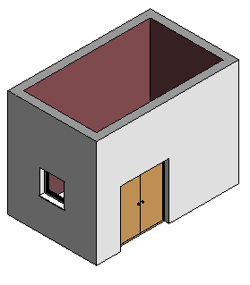
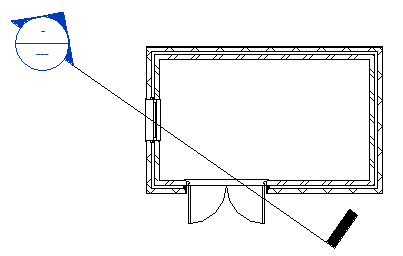
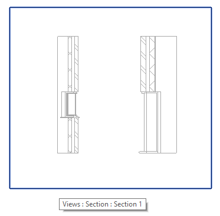
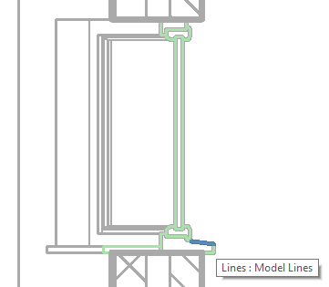
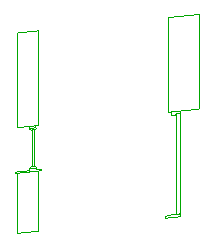

I played around creating a new SectionCutGeo add-in to retrieve the geometry resulting from cutting a family instance in a section view.
This was prompted by Martin von Kessel, @Hacklberg, in the Revit API discussion forum thread on getting intersection lines from cut in section view:
Question: I am trying to get the Intersection of Section and FamilyInstance.
The GeometryElement of the family returns all faces, even if they are outside of the section.
Here is what I am after:
Is there any predefined function to receive the Solid or BoundingBox inside the section?
It is definitely possible, as was explained by Saeed Karshenas in his demonstration of visualising section view geometry in OpelGL.
To achieve this, you need to specify the section view in the options passed in to get the geometry:
Options option = new Options(); option.View = viewSection; GeometryElement geometryElement = familyInstance .get_Geometry( option ); GeometryInstance? gInst = geometryElement.First() as GeometryInstance; GeometryElement gSymbol = gInst.GetInstanceGeometry();
The crucial point, however, if you want to retrieve the intersection lines of the family instance and the section cut plane, is to set the VIEWER_BOUND_FAR_CLIPPING parameter appropriately.
The default setting is 2, 'Clip without line'.
I changed it to 1, 'Clip with line', and then the intersection lines are returned:
viewSection.get_Parameter( BuiltInParameter.VIEWER_BOUND_FAR_CLIPPING ) .Set( 1 ); viewSection.DetailLevel = ViewDetailLevel.Fine;
In the SectionCutGeo add-in, I only want to retrieve the intersection curves of the family instance with the cut plane of the section view.
The geometry returned includes the entire truncated solid.
How to determine which of its curves lie in a specific plane?
Initially, I simply called NewModelCurve, specifying the sketch plane in that cut plane, for each of the curves I retrieved from the geometry.
It works for the curves that lie in that plane and throws an exception for all the ones that do not:
Throwing all those exceptions is a very horrible thing to do and costs a huge amount of time.
It provides a brain-dead simple way to get rid of the off-plane curves, though.
So far, we simply tried to create a model curve in the given plane. This throws an exception if the curve does not lie in the plane. That is bad and costs a huge amount of performance. Better would be to programmatically check whether the curve lies in the plane beforehand, instead of throwing an exception. How can we determine whether a curve lies in a plane?
I asked the development team whether they can suggest a method to check beforehand whether a curve lies in a given plane or not:
Jeremy: Is there a way to check whether a Curve lies in a given Plane? I can simply call NewModelCurve on it. That throws exception if the curve does not lie in the plane. However, it would be much cleaner and more efficient to check that programmatically instead. Does the Revit API offer anything that I could use for that check, or is this a case of DIY?
Devteam: Face has Intersect(Curve).
Plane (or other Surface) does not.
Could you project the curve end-points (and one intermediate point) with Surface.Project and check the distances?
Alternatively, can’t you build a plane via 3 points on the curve, confirm matching normal vectors and then check on point on the target plane for intersection with the generated plane? Also, check that the initiating curve is planar (no idea how in Revit API but non-planar 3D splines are a thing that ruins all of the above).
Jeremy: Yes, I could project and test the distance. I think I only have arcs and lines, though, so it may be easier to implement my own is-curve-in-plane predicate, much faster, probably... I think the Revit API once boasted a method on the Curve class to return the plane it was lying in, but that seems to have vanished...
I added a counter to track all the different kinds of geometry elements I am handling, and it reported:
3 Element
2 FamilyInstance
7 GeometryElement
2 GeometryInstance
261 Line
2 null
9 Solid
2 Wall
Apparently, all the curves I have to handle are Line objects, and that is easy using Plane.Project:
/// <summary> /// Predicate returning true if the given line /// lies in the given plane /// </summary> static bool IsLineInPlane( Line line, Plane plane ) { XYZ p0 = line.GetEndPoint( 0 ); XYZ p1 = line.GetEndPoint( 1 ); UV uv0, uv1; double d0, d1; plane.Project( p0, out uv0, out d0 ); plane.Project( p1, out uv1, out d1 ); return _eps > Math.Abs( d0 ) && _eps > Math.Abs( d1 ); }
Jeremy: I wonder if d0 and d1 are guaranteed to be positive in any case?
Or can they be negative also?
The documentation should tell me, but it does not.
Devteam: The distance output will always be non-negative (up to floating-point rounding error). You are correct in saying that the API documentation should state that explicitly, though it probably uses "distance" to generally mean unsigned distance. You're also correct in saying that it would be helpful for Revit's API to provide a function to determine if a curve lies in a plane (or more generally, on any given surface). There is an internal function that does so, but it's not exposed via the API.
Using my own curve-in-plane predicate to eliminate all curves not lying in the plane instead of throwing an exception for each one sped up execution tremendously.
It also enabled me to separate the curve collection and the model curve creation from each other.
I implemented a read-only curve collection section followed by a separate, later, transaction for the model curve creation.
The code now looks like this:
namespace SectionCutGeo { /// <summary> /// A class to count and report the /// number of objects encountered. /// </summary> class JtObjCounter : Dictionary<string, int> { /// <summary> /// Count a new occurence of an object /// </summary> public void Increment( object obj ) { string key = null == obj ? "null" : obj.GetType().Name; if( !ContainsKey( key ) ) { Add( key, 0 ); } ++this[key]; } /// <summary> /// Report the number of objects encountered. /// </summary> public void Print() { List<string> keys = new List<string>( Keys ); keys.Sort(); foreach( string key in keys ) { Debug.Print( "{0,5} {1}", this[key], key ); } } } [Transaction( TransactionMode.Manual )] public class Command : IExternalCommand { /// <summary> /// Maximum distance for line to be /// considered to lie in plane /// </summary> const double _eps = 1.0e-6; /// <summary> /// User instructions for running this external command /// </summary> const string _instructions = "Please launch this " + "command in a section view with fine level of " + "detail and far bound clipping set to 'Clip with line'"; /// <summary> /// Predicate returning true if the given line /// lies in the given plane /// </summary> static bool IsLineInPlane( Line line, Plane plane ) { XYZ p0 = line.GetEndPoint( 0 ); XYZ p1 = line.GetEndPoint( 1 ); UV uv0, uv1; double d0, d1; plane.Project( p0, out uv0, out d0 ); plane.Project( p1, out uv1, out d1 ); Debug.Assert( 0 <= d0, "expected non-negative distance" ); Debug.Assert( 0 <= d1, "expected non-negative distance" ); return ( _eps > d0 ) && ( _eps > d1 ); } /// <summary> /// Recursively handle geometry element /// </summary> static void GetCurvesInPlane( List<Curve> curves, JtObjCounter geoCounter, Plane plane, GeometryElement geo ) { geoCounter.Increment( geo ); if( null != geo ) { foreach( GeometryObject obj in geo ) { geoCounter.Increment( obj ); Solid sol = obj as Solid; if( null != sol ) { EdgeArray edges = sol.Edges; foreach( Edge edge in edges ) { Curve curve = edge.AsCurve(); Debug.Assert( curve is Line, "we currently only support lines here" ); geoCounter.Increment( curve ); if( IsLineInPlane( curve as Line, plane ) ) { curves.Add( curve ); } } } else { GeometryInstance inst = obj as GeometryInstance; if( null != inst ) { GetCurvesInPlane( curves, geoCounter, plane, inst.GetInstanceGeometry() ); } else { Debug.Assert( false, "unsupported geometry object " + obj.GetType().Name ); } } } } } public Result Execute( ExternalCommandData commandData, ref string message, ElementSet elements ) { UIApplication uiapp = commandData.Application; UIDocument uidoc = uiapp.ActiveUIDocument; Application app = uiapp.Application; Document doc = uidoc.Document; View section_view = commandData.View; Parameter p = section_view.get_Parameter( BuiltInParameter.VIEWER_BOUND_FAR_CLIPPING ); if( ViewType.Section != section_view.ViewType || ViewDetailLevel.Fine != section_view.DetailLevel || 1 != p.AsInteger() ) { message = _instructions; return Result.Failed; } FilteredElementCollector a = new FilteredElementCollector( doc, section_view.Id ); Options opt = new Options() { ComputeReferences = false, IncludeNonVisibleObjects = false, View = section_view }; SketchPlane plane1 = section_view.SketchPlane; // this is null Plane plane2 = Plane.CreateByNormalAndOrigin( section_view.ViewDirection, section_view.Origin ); JtObjCounter geoCounter = new JtObjCounter(); List<Curve> curves = new List<Curve>(); foreach( Element e in a ) { geoCounter.Increment( e ); GeometryElement geo = e.get_Geometry( opt ); GetCurvesInPlane( curves, geoCounter, plane2, geo ); } Debug.Print( "Objects analysed:" ); geoCounter.Print(); Debug.Print( "{0} cut geometry lines found in section plane.", curves.Count ); using( Transaction tx = new Transaction( doc ) ) { tx.Start( "Create Section Cut Model Curves" ); SketchPlane plane3 = SketchPlane.Create( doc, plane2 ); foreach( Curve c in curves ) { doc.Create.NewModelCurve( c, plane3 ); } tx.Commit(); } return Result.Succeeded; } } }
Note that the code listed above is a momentary snapshot at the time of writing.
For the full Visual Studio solution and updates to the code, please refer to the SectionCutGeo GitHub repository.
Sample model 3D view:

Plan view showing section location:

Cut geometry in section view:

Model lines representing the cut geometry of the window family instance produced by the add-in in section view:

Model lines representing the cut geometry of walls, door and window isolated in 3D view:

Listing the number of processed elements, geometry objects and curves actually lying in the cut plane for this sample:
Object analysed:
3 Element
2 FamilyInstance
7 GeometryElement
2 GeometryInstance
261 Line
2 null
9 Solid
2 Wall
77 cut geometry lines found in section plane.
This sample currently only handles solid and instance geometry objects.
There may well be other object types that need to be handled as well to provide full coverage for all situations.